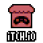
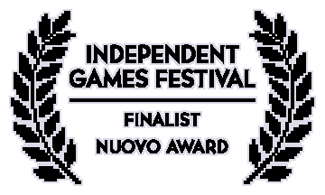
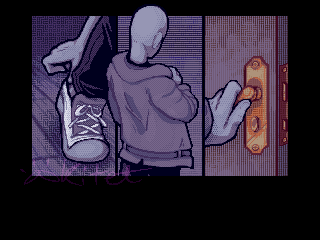
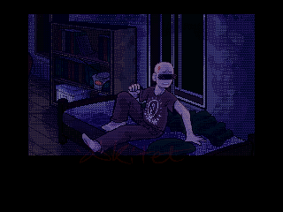
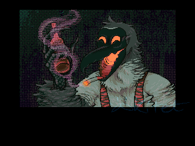
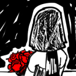

VIDEO GAMES
MAJOR WORKS
|  |
 AN OUTCRY My role was visual director, cutscene and storyboard artist. The game is a narrative horror experience made in RPGMaker 2003, written and directed by Quinn K, the original english translator of Mortis Ghosts's "OFF". Please enjoy, and mind the content warnings. |
||
|  |
Minor Collabs
|  | GUNSHOT BRIDE --- Game #20 on the Haunted PS1 Madvent Calendar 2021. A short FPS combat vignette. I made the intro cutscene illustrations. |
| this space for rent :) |